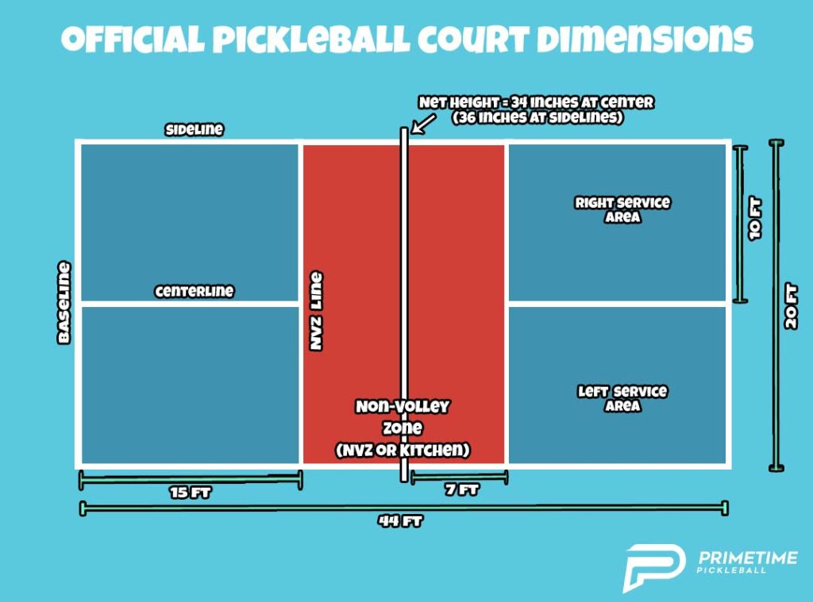
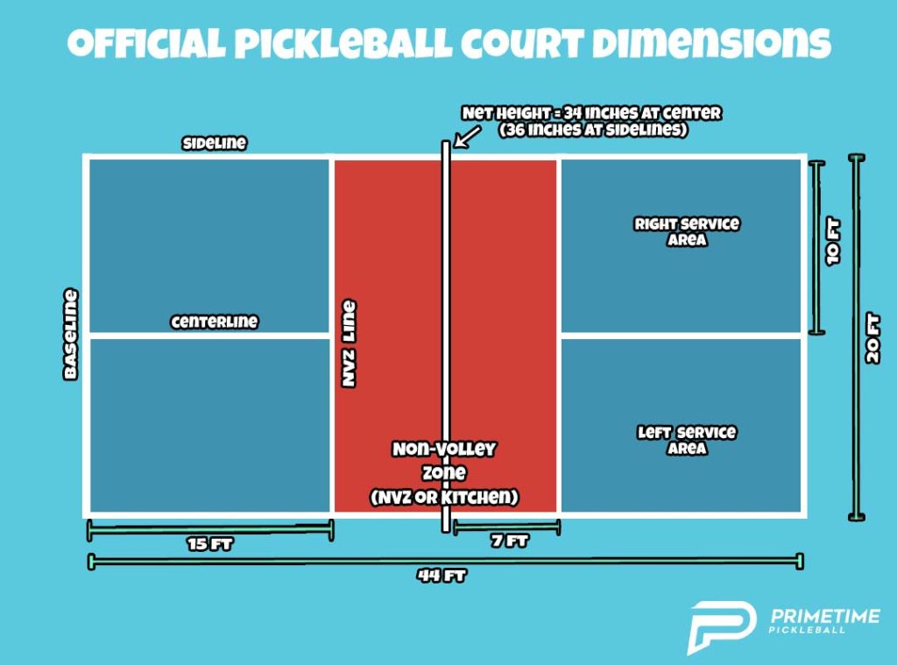

Pickleball
Pickleball is a great way for me to work out my energy and helps reinforce the mantra of being "1% better every day".

Here's a picture of me and my doubles partner at the most recent tournament we played in, on May 6th,
2023.
We've always wanted to push ourselves, so we started in the 3.5 bracket. This most recent tournament, we
couldn't get in at the 4.0 skill, so we competed in 4.5. We only beat one team, but we had so much fun
playing.
I am always pushing myself to become just a little bit better, a little bit more scary on the courts. I
try
and play 8 hours minimum per week, but there are weeks where I can spend 20+ hours practicing and
playing. I
enjoy the sport. You meet many diverse people, depending on where you play and the times you play at.
I've
only been playing for about 15 months, but I've made some great connections, learned plenty about my
community, and really learned what it takes to push myself further and further.
 
